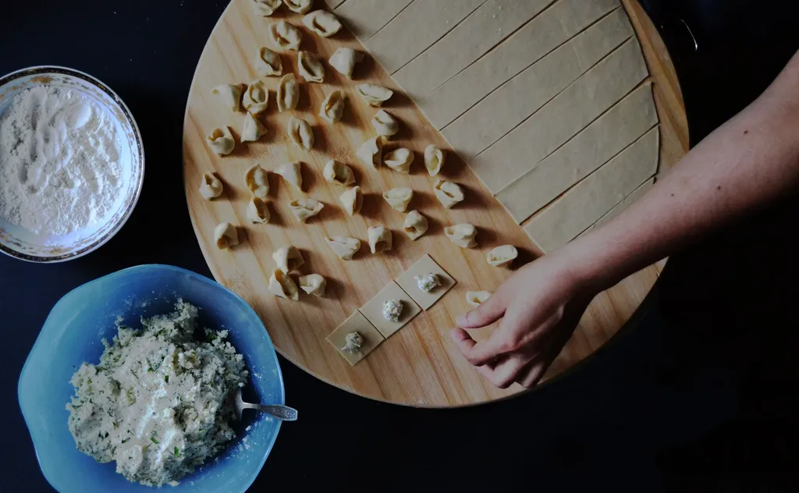

Corsi di sfoglia
Tirate la vostra sfoglia, poi mangiatela
Tre ore al tavolo della sfoglia con Rosa. Impastate uova e farina, fate tagliatelle e tortellini, poi vi sedete a pranzo con un calice di Sangiovese.

- 3 ore10:00 – 13:00, pranzo incluso
- 6 personeal massimo, un mattarello a testa
- € 75a persona, vino e grembiule inclusi
- IT · ENIn italiano e in inglese
- La fontanaFarina, uova, una forchetta e pazienza.
- La sfogliaTirata finché ci si legge il giornale attraverso.
- Taglio e chiusuraTagliatelle al coltello, tortellini a mano, uno per uno.
- PranzoCuciniamo quello che avete fatto. Il resto lo portate a casa.
Scegliete una mattina
I corsi sono il martedì, il giovedì e il sabato.